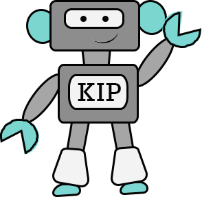

Upkeep Technology Solutions Inc. is one of the first providers of mobile-based solutions specifically targeted to nano, micro and small enterprises. It is a pioneer in integrating features such as inventory tracking, sales management, and basic financial management which are suited for the target market. Upkeep wants to change the usual pen and paper record-keeping and sales tracking of most nano, micro and small enterprises.